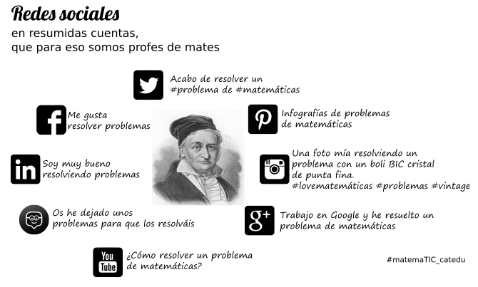

Hay muchas redes sociales. El siguiente gráfico que hemos preparado intenta sintetizar las más importantes:

Vamos a fijarnos ahora en la red social del pajarito, Twitter, que es, realmente, un servicio de microblogging, donde los usuarios comparten mensajes de 140 caracteres como máximo.
¿Por qué Twitter en un curso de Matemáticas con TIC?
Los profesores de todos los niveles, incluidos los de matemáticas, forman un grupo de usuarios bastante activo en Twitter. Activo y heterogéneo, porque encontramos de todo. Desde maestros y profesores que comparten la última actividad que les ha funcionado especialmente bien (o especialmente mal) en su aula hasta compañeros que reflexionan sobre algún tema de actualidad (en educación matemática), pasando por la divulgación de recursos y muchas otras cosas más. Algunos usuarios bastante activos relacionados con nuestro gremio son, por ejemplo, @ClaraGrima, @edusadeci, @McLennan1977 o @SimonGregg. Basta echar un vistazo a su TimeLine para ver de qué va la cosa.
Twitter en 8 puntos
Espera, espera, que en esta última frase han aparecido la arroba y una palabra especial... Y sí, Internet tiene su propia jerga. Twitter usa una terminología peculiar. Vayamos por partes:
- Un tweet es un mensaje. Ya sabemos, no más de 140 caracteres, pero se pueden adjuntar imágenes, gifs o vídeos.
- Cada usuario tiene un nombre o nick, que es el que define su perfil. Su página principal, por así decirlo. Cuando queremos nombrar a un usuario en un tweet, utilizamos la arroba (@). El mismo editor de Twitter nos completará el nombre, con mayor facilidad si está entre nuestra lista de seguidores.
- Se pueden mandar mensajes privados entre usuarios que se siguen mutuamente.
- La almohadilla (
#) sirve para definir un hashtag, una etiqueta que, idealmente, sintetiza el tema del mensaje. Esto facilita la búsqueda de todos los mensajes que nos interesan en un momento dado. Por ejemplo, el hashtag del curso es:
#matemaTIC_catedu
- Si has escuchado la expresión trending topic alguna vez, es precisamente un hashtag especialmente popular. Muchos mensajes en un intervalo de tiempo relativamente corto, mucha gente reenviando esos mensajes, etc.
- Retweets. Cuando vemos un tweet interesante que queremos compartir con nuestros seguidores, lo podemos retuitear.
- Likes o me gusta. El símbolo del corazoncito sirve, normalmente, para indicar que estamos de acuerdo con esa opinión, o que nos ha hecho gracia ese tweet. Ciertos usuarios utilizan los retweet y los likes para plantear encuestas. Por ejemplo, dale a retweet si eres más de académicas y a like si eres de aplicadas.
- TimeLine (TL). El chorro de mensajes de todas las personas a las que sigues y lo que aparece, por defecto, cuando entras en Twitter con tu cuenta. Igualmente, si entras en el perfil de alguien, podrás ver su TL particular.
- Listas. En cuanto sigues más de 100 cuentas, tu TL se puede convertir en lo más cercano al caos que eres capaz de imaginar. Las listas están para ayudarte a organizar eso. Por ejemplo, puedes tener una lista solo con profes de matemáticas que, efectivamente, publican cosas de matemáticas que te resultan interesantes. Otra para cuentas relacionadas con las TIC/TAC, otra para noticias de tu ciudad...
¿A qué esperas?
Para empezar a utilizar Twitter basta con registrarse en www.twitter.com:
Nos pedirá nuestro nombre, un mail o un teléfono y una contraseña. En el siguiente paso es cuando se elige el nombre de usuario @minick.
Twitter en modo avanzado
Para gestionar las listas y aprovechar Twitter al máximo, no podemos dejar de recomendar TweetDeck. Es una herramienta que nos permitirá manejar varias cuentas a la vez y tener todo bien organizadito en columnas en la pestaña de un navegador. Existen apps similares para dispositivos móviles. Además, no solo permite la gestión de listas, sino que podremos programar mensajes, seguir «conversaciones», participar en eventos, etc., sin perdernos nada de lo que ocurre.
@leonidasarjona realizó un breve vídeo donde resume muy bien todo lo que se puede hacer con esto.